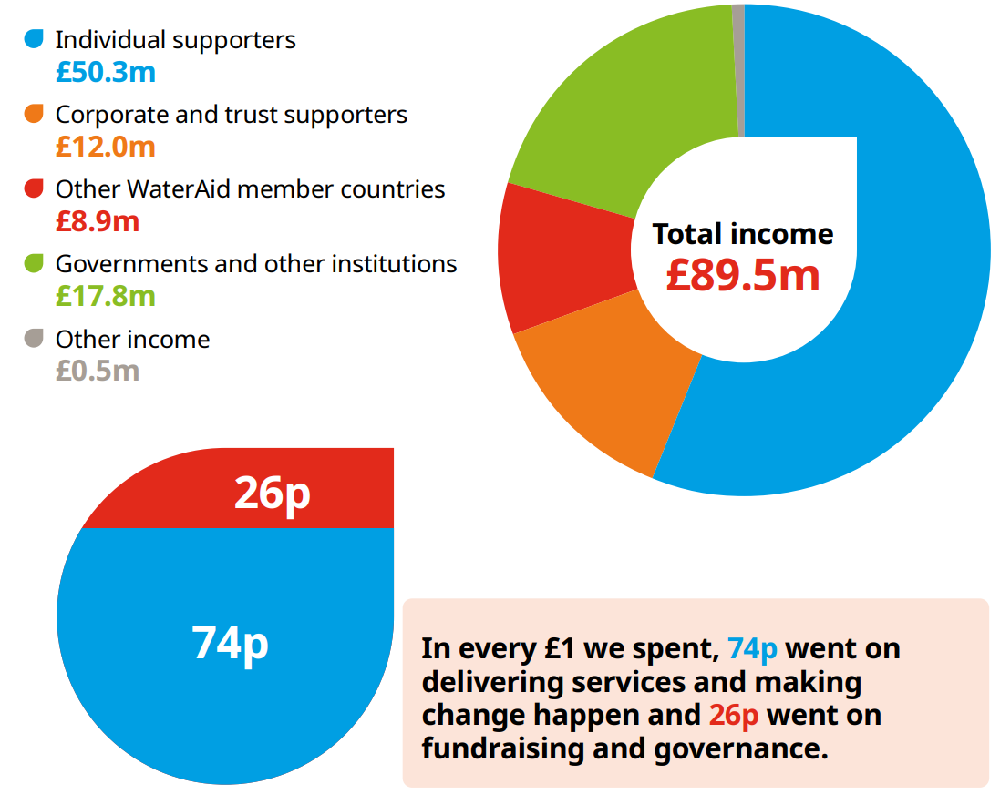

WaterAid's origin and sector
WaterAid is an international non-profit organisation operating in the secondary and tertiary sectors, manufacturing and supplying products and services to disadvantaged people and families internationally.
A charity (or charitable trust) is an organisation that does not aim to make any profits (any excess money made in a financial year is called a suplus, not a profit), and all proceeds go towards fulfilling their charitable mission, aims and objectives. As a result, governments provide them with lower tax rates than normal businesses in almost all areas.
Some risks come along with being a charity, as they must be more clear about surplusses and provide a much greater level of detail to the public and government about their finances due to the benefits they have (such as reduced taxation). This is done to prevent charities exploiting the rules and actually making profits which are given to their directors. If charities do not report enough information, the government can immediately revoke their charity license with almost no warning.
WaterAid began in 1981 as a result of the United Nations International Drinking Water decade, with projects in Sri Lanka and Zambia, as a join project between members of the UK water industry during the Thirsty Third World Conference.
Tax reductions for charities
VAT
Charities do not have to pay any VAT on the sale of goods donated to them by the general public, so long as the items have been "made available to the general public, or to 2 or more persons who are disabled or receiving certain means tested benefits". This allows a larger proportion of revenue to be dedicated to charitable missions. VAT must still be paid on most items purchased by charities.
Gift aid
Monetary donations made to charities are not taxed at all under the UK government's "Gift Aid" programme. In addition, individuals who make donations to charities registered for Gift Aid with HMRC can reclaim the Income Tax on the amount which they donate, which can act as an incentive for people earning large amounts of money (and thus paying large amounts of income tax).
Charitable expenditure
No taxes need to be paid on profits earned by charities on the services or products they provide, nor on purchasing or selling assets and property, as long as these surpluses are used for charitable purposes. Charities also pay 80% lower business rates (taxes from the local council for running a business out of a given property) on non-domestic properties. From the 2016/17 financial year and later, dividends earned from UK companies are also not taxed.

Missions and aims
WaterAid's mission is to provide easy access to clean water, improved sanitation (handling of waste water and sewage), and proper hygiene for everyone around the world, because without access to all three, people are at risk of bacterial and viral infections, such as cholera, impacting their ability to live a healthy and happy life.
Charitable activities
Since 1981, WaterAid have completed many projects, including the largest single water supply scheme in Ethopia (Hitosa Gravity Scheme, 1993), advocating for the United Nations to declare access to clean water as a human right, and they have provided 27 million people with clean water and toilets.
In 2020, we scaled up hand-washing efforts in 18 different countries due to the Coronavirus pandemic. In March this year (2021), we announced that, since 2006, their partnership with PepsiCo has allowed them to provide new clean water infrastructure to 55 million people across the globe, with WaterAid and PepsiCo's joint aim of 100 million by 2030 still within reach.

Supporting WaterAid and their product portfolio
You can support WaterAid in many ways, including purchasing products on behalf of those in need from their online store.
You can pay for an item which directly helps someone in need, such as a toilet, water tank, handwashing station, or a water collection station. Purchasing one of these items from their store will directly allow WaterAid to provide one to a family or neighbourhood in need.
The products appeal to people who feel a desire to help others. Purchasing them only grants you a card stating that you've helped other people (e.g. providing a set of taps, a water collection system, emptying a school toilet, and more), rather than a physical product for your own use. This allows as much money as possible to go directly towards WaterAid's aid mission: providing their clean water and hygiene services to those in need.
You can also take part in "Coast Along for WaterAid", which is their annual sponsored walk.
The majority of WaterAid's revenue comes from individual donations, government grants, and purchases like these. All their revenue is used to fund their charitable mission, aims and objectives.
WaterAid worldwide
WaterAid operates around the world in a multitude of countries. Its main headquarters are in London, but they also have head offices in the USA, Australia, Sweden, Canada, Japan and India.
As of September 2020, WaterAid has approximately 1200 countries across over 35 countries. Employee diveristy is high within WaterAid due to the large number of cultures and areas of operation, which allows the charity to more closely work with and understand local needs in the areas which they provide their charitable services and activities. The director of organisational development, Rachel Wescott, told People Management UK that, "I’ve talked to a number of trustees who’ve said they haven’t worked with another organisation that lives its values quite like WaterAid," when asked about how employees feel while working at the charity.
WaterAid needs this large number of employees and offices because they are a worldwide charity, providing their not-for-profit services across tens of countries in need, as well as increasing awareness of the charity in local areas. As a result, WaterAid gains access to increased funding capability from the public and local corporations.
Key people
-

Tim Wainright
Chief Executive, WaterAid UK
I've been Chief Executive of WaterAid since May 2017. I've previously held senior positions at other charities, such as Oxfam. I have a strong commitment to equality and human rights, which are central elements of WaterAid’s work and our vision of a world where everyone has access to water, sanitation and hygiene.
-
Maureen O'Neill
Chair, WaterAid International Board
-
Andrew McCracken
Global Director, WaterAid International
"Andrew impressed us with his experience and grasp of the subtlety of this role, balancing relational intelligence, strategic intelligence and a depth of insight into the WaterAid federation. His dedication to development and social change will undoubtedly contribute to our success in achieving our goals."
Financial analysis
2020 to 2021
Over the last financial year, from 2020 to 2021, WaterAid's income fell by only 1.9%, a remarkable feat during a global pandemic. At the start of the pandemic, WaterAid had estimated a possible shortfall of approximately £10 million, but the actual shortfall was only £1.75 million.
2019 to 2020
Betwen 2019 and 2020, WaterAid's income was approximately £91.3 million, with them spending 76p for every £1 on fulfilling their aims and objectives, with the remaining 24p dedicated to future fundraising for the charity. This 76:24 split is common throughout the last 3 financial years, and WaterAid attempt to keep as close to this split as possible, as it has so far resulted in continuous and sustainable charity growth, while not affecting their ability to meet their objectives and aims.
WaterAid's success
WaterAid measure their success with a multitude of different aims and objectives. Their overall mission is to provide clean water, better hygeine standard and toilets to everyone around the world.
The WaterAid Foundation has been successful in expanding their activities internationally and to more people than ever before. Between 2019 and 2020, WaterAid spent a total of £30.78 million on delivering water, sanitation and hygeine products and services globally. The large majority of this was through their partners. This has increased by £6.83 million from £23.95 during the 2018-19 financial year. This significant increase is attributed to delivering WaterAid's new programmes, which they had secured long-term funding for in the previous financial year. WaterAid's activities has allowed them to supply 6000 people with clean water in Bauchi State in Nigeria, along with improving sanitation for 10000 households, and 15000 people via improving the primary healthcare facilities in Dewu and Kafin Iya. All of these benefit the charity's long-term mission statement of providing clean water, hygiene and sanitation to all.
WaterAid have also been successful in raising capital for their sanitation and clean water projects from all sectors. Across the last few financial years, the vast majority of WaterAid's funding has come from individual supporters (approx. £48.7 million), followed by corporate contributions and governments (£17.1 and £11.9 million respectively). Their income has remained stable, allowing them to predict the amount of funding they will have each year, leaving a smaller safety-net in case of unexpected issues.